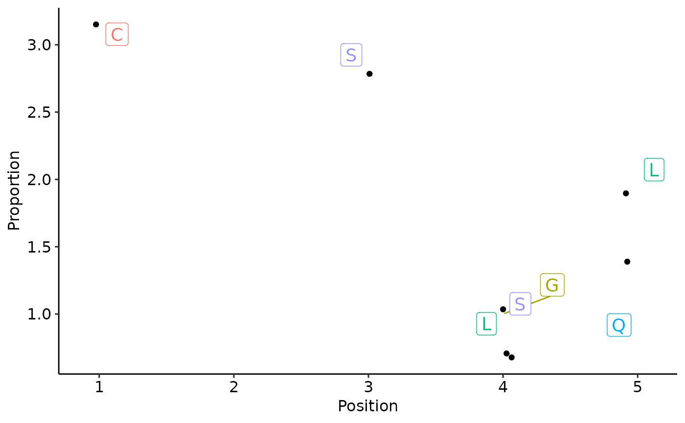

Plot sequence logo plots for visualising of amino acid motif sequences / profiles.
`vis_textlogo` plots sequences in a text format - each letter has the same height. Useful when there are no big differences between occurences of amino acids in the motif.
`vis_seqlogo` is a traditional sequence logo plots. Useful when there are one or two amino acids with clear differences in their occurrences.
vis_textlogo(.data, .replace.zero.with.na = TRUE, .width = 0.1, ...)
vis_seqlogo(.data, .scheme = "chemistry", ...)| .data | Output from the |
|---|---|
| .replace.zero.with.na | if TRUE then replace all zeros with NAs, therefore letters with zero frequency wont appear at the plot. |
| .width | Width for jitter, i.e., how much points will scatter around the verical line. Pass 0 (zero) to plot points on the straight vertical line for each position. |
| ... | Not used here. |
| .scheme | Character. An argumentt passed to geom_logo specifying how to colour symbols. |
A ggplot2 object.
data(immdata)
kmers <- getKmers(immdata$data[[1]], 5)
ppm <- kmer_profile(kmers, "prob")
#> Warning: Warning: removed 5 non-amino acid symbol(s): A
#> Please make sure your data doesn't have them in the future.
vis(ppm, .plot = "text")
#> Warning: Removed 5 rows containing missing values (geom_point).
#> Warning: Removed 5 rows containing missing values (geom_label_repel).
#> Warning: ggrepel: 21 unlabeled data points (too many overlaps). Consider increasing max.overlaps
vis(ppm, .plot = "seq")
d <- kmer_profile(c("CASLL", "CASSQ", "CASGL"))
#> Warning: Warning: removed 1 non-amino acid symbol(s): A
#> Please make sure your data doesn't have them in the future.
vis_textlogo(d)
#> Warning: Removed 93 rows containing missing values (geom_point).
#> Warning: Removed 93 rows containing missing values (geom_label_repel).

vis_seqlogo(d)